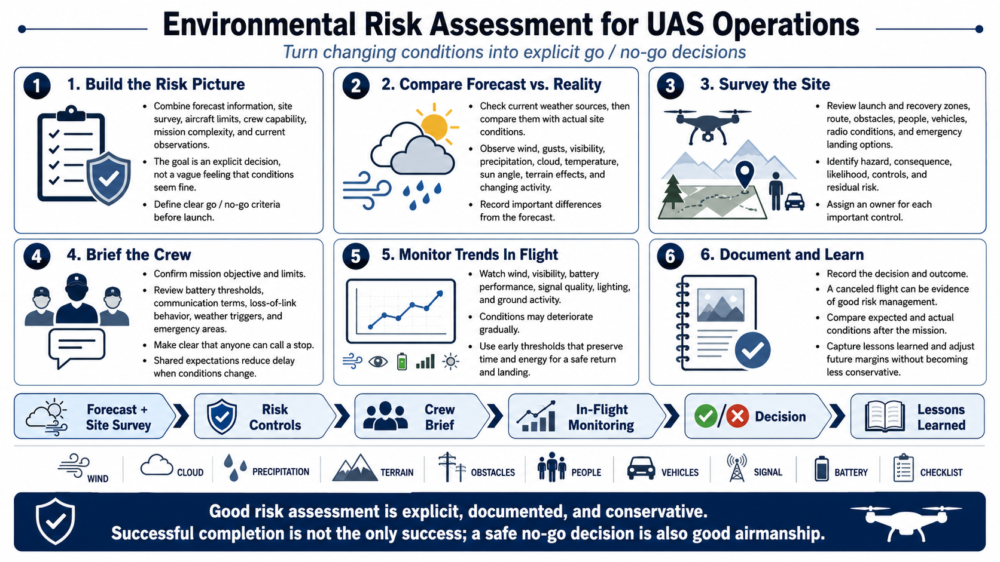

Environmental Risk Assessment
Connecting to LMS... Progress: in progress

Narration
Environmental risk assessment combines forecast information, a site survey, aircraft limits, crew capability, mission complexity, and current observations. It should produce explicit go or no-go criteria rather than a vague sense that conditions look acceptable.
Check weather from appropriate current sources, then compare it with the site. Observe wind indicators, gusts, visibility, precipitation, cloud, temperature, sun angle, terrain effects, and changing activity. Record material differences from the forecast.
Survey launch, recovery, route, obstacles, people, vehicles, radio conditions, and emergency landing options. Identify hazards, consequence, likelihood, controls, and residual risk. Assign an owner for each important control.
Brief the crew on the objective, limits, battery thresholds, communication terms, loss-of-link behavior, weather triggers, emergency areas, and who can call a stop. Shared expectations reduce delay when conditions change.
Monitor trends during flight. Wind, visibility, battery performance, signal quality, lighting, and ground activity can deteriorate gradually. Use early thresholds that preserve time and energy for a controlled return and landing.
Document the decision and outcome. A canceled flight can be evidence of good risk management. After the mission, compare expected and actual conditions, capture lessons, and adjust future margins without turning one successful flight into permission for less conservative behavior.